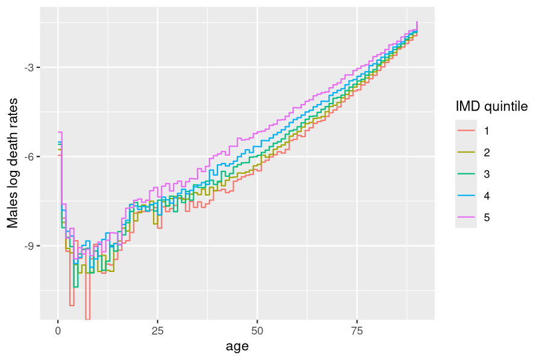
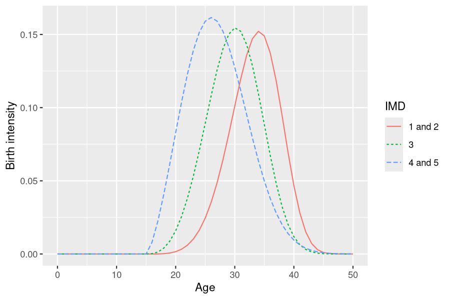
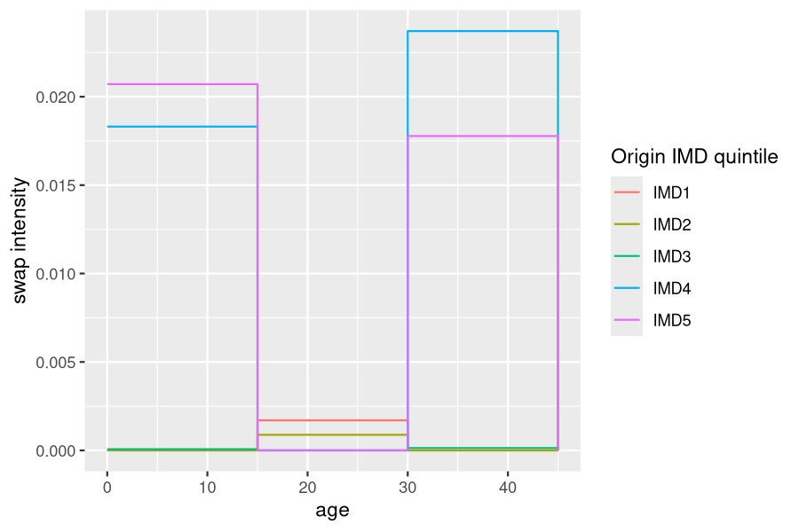
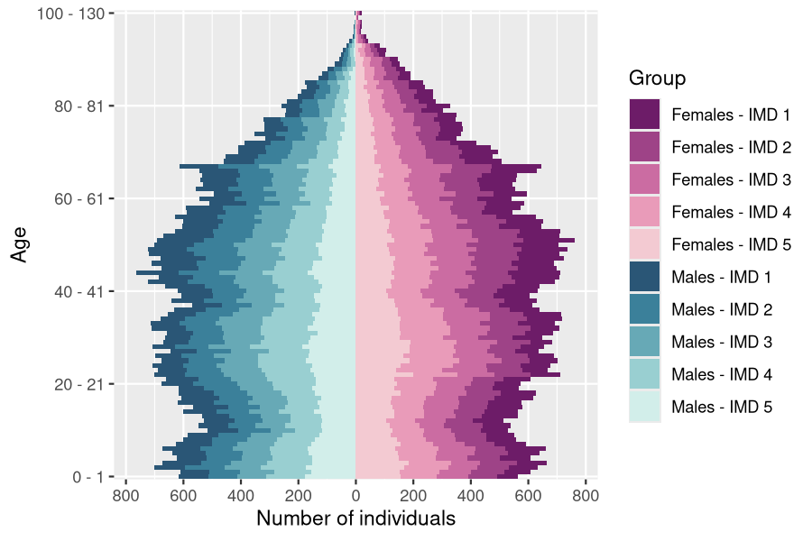
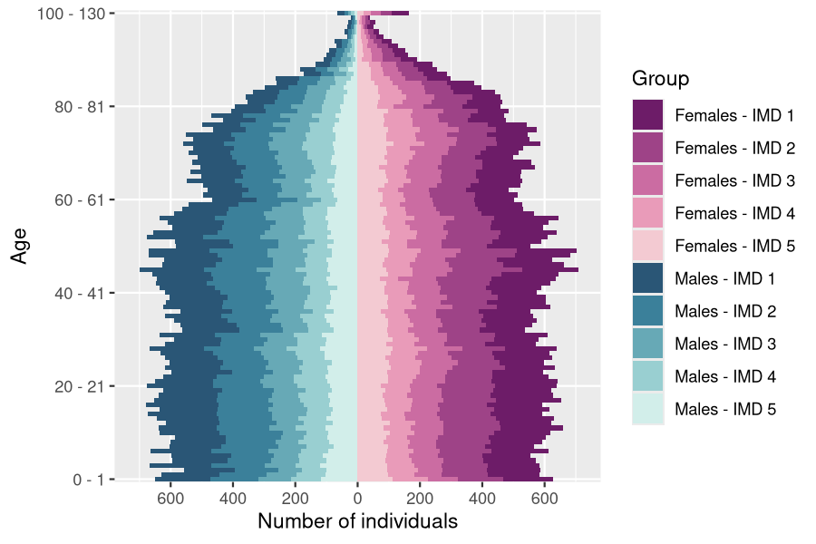
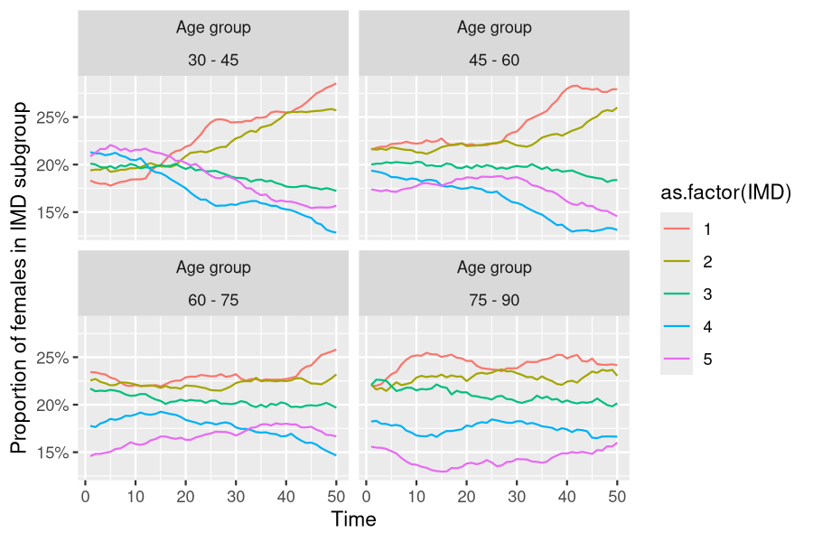
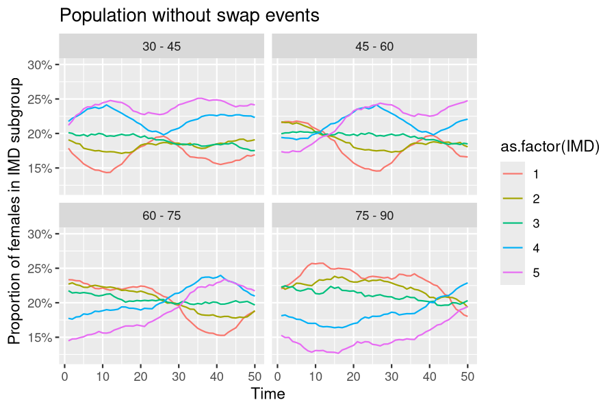
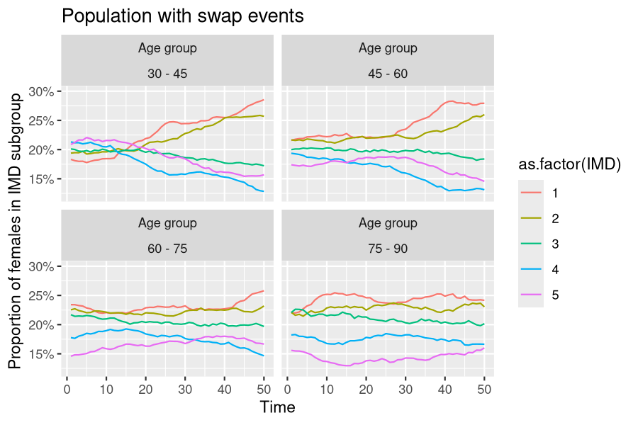

vignettes/IBMPopSim_human_pop_IMD.Rmd
IBMPopSim_human_pop_IMD.RmdThis vignette provides an example of usage of the package IBMPopSim, for simulating an heterogeneous “human population” in which individuals can change of characteristics over their life course. As this a more advance example of IBM simulation with IBMPopSim, it is recommended to start by reading the package vignettes vignette('IBMPopSim') and vignette('IBMPopSim_human_pop').
The population is based on data from England and Wales (EW) population, and individuals are characterized by the so-called Index of Multiple Deprivation (IMD), a deprivation index based on the place of living ( see here for more details).
A toy model is simulated, where the individuals’ demographic rates depend on their IMD. Due to internal migrations, individuals can change of IMD over their life course (swap events).
The population is structured by age, gender and IMD. The population is distributed into five IMD quintiles. Group 1 corresponds to the least deprived subpopulation, and group 5 to the most deprived subpopulation.
Death and birth intensities are constant over time, but depend on the individuals age, gender and IMD. For instance, individuals in group 5 have a higher death intensity than individuals in group 1.
Individuals inherit the same IMD than their parent at birth, but can change of IMD over time, due to internal migration. In this toy model, we assume than younger individuals around 20 are more likely to move to more a deprived neighborhood, while individuals in the age class 30-45 are more likely to move to a less deprived neighborhood.
The initial population is a 100 000 individuals population sampled from England and Wales’ 2014 age pyramid, structured by single year of age, gender and IMD quintile (source: Office for National Statistics).
str(EW_popIMD_14)
## List of 3
## $ age_pyramid:'data.frame': 1160 obs. of 4 variables:
## ..$ age : Factor w/ 116 levels "0 - 1","1 - 2",..: 1 1 1 1 1 1 1 1 1 1 ...
## ..$ IMD : int [1:1160] 1 2 3 4 5 1 2 3 4 5 ...
## ..$ male : logi [1:1160] FALSE FALSE FALSE FALSE FALSE TRUE ...
## ..$ value: num [1:1160] 49114 54293 61541 73289 85626 ...
## $ death_rates:List of 2
## ..$ male :'data.frame': 455 obs. of 3 variables:
## .. ..$ age : int [1:455] 0 1 2 3 4 5 6 7 8 9 ...
## .. ..$ IMD : num [1:455] 1 1 1 1 1 1 1 1 1 1 ...
## .. ..$ value: num [1:455] 2.59e-03 3.13e-04 1.02e-04 1.65e-05 1.46e-04 ...
## ..$ female:'data.frame': 455 obs. of 3 variables:
## .. ..$ age : int [1:455] 0 1 2 3 4 5 6 7 8 9 ...
## .. ..$ IMD : num [1:455] 1 1 1 1 1 1 1 1 1 1 ...
## .. ..$ value: num [1:455] 2.87e-03 2.52e-04 1.43e-04 8.73e-05 1.20e-04 ...
## $ sample :'data.frame': 100000 obs. of 4 variables:
## ..$ birth: num [1:100000] -0.0917 -0.6313 -0.5008 -0.4568 -0.6978 ...
## ..$ death: num [1:100000] NA NA NA NA NA NA NA NA NA NA ...
## ..$ male : logi [1:100000] FALSE TRUE TRUE FALSE TRUE FALSE ...
## ..$ IMD : int [1:100000] 5 2 5 4 3 4 2 1 5 4 ...
head(EW_popIMD_14$sample)
## birth death male IMD
## 1 -0.09170591 NA FALSE 5
## 2 -0.63126956 NA TRUE 2
## 3 -0.50078693 NA TRUE 5
## 4 -0.45684987 NA FALSE 4
## 5 -0.69782311 NA TRUE 3
## 6 -0.04470658 NA FALSE 4There are 3 possible types of events :
Each event is characterized by its intensity and its kernel, as follows.
For each gender \(\epsilon\) and IMD subgroup \(i=1..5\), we define a step function
\[d_i^\epsilon (a), \quad a=0,..a_{max}\]
defining the death intensity of an individual of age \(a\), gender \(\epsilon\) and subgroup \(i\).
Death intensities are based on EW 2014 age specific death rates by gender and IMD (source: Office for National Statistics).
Death rates are lower in less deprived quintiles.

Step functions creation
The death intensity functions for each IMD and gender are defined as parameters of the model, as two list of R step functions.
These parameters will be transformed during the model creation into a vector of C++ step functions (starting from index 0).
params_death = with(EW_popIMD_14$death_rates,
list(
"death_male"=lapply(1:5, function(i) stepfun(x= subset(male, IMD==i)[,"age"],
y= c(0,subset(male, IMD==i)[,"value"]))),
"death_female"=lapply(1:5, function(i) stepfun(x= subset(female, IMD==i)[,"age"],
y= c(0,subset(female, IMD==i)[,"value"])))
)
)C++ code chunk implementing the intensity of a death event:
intensity_code_death <- '
if (I.male)
result = death_male[(I.IMD-1)](age(I,t));
else
result = death_female[(I.IMD-1)](age(I,t));
'Creation of the event
By default, the name of the event is “death”.
death_event <- mk_event_individual(
type = "death",
intensity_code = intensity_code_death
)In this toy model, only women give birth, at a Weibull shaped intensity \(b_i(a)\) depending on their age \(a\) and IMD subgroup \(i\),
\[b_i(a)=TFR_i\frac{\beta_i}{\alpha_i}(\frac{(a-\bar{a})}{\alpha_i})^{\beta_i-1}\exp((-\frac{a-\bar{a}}{\alpha_i})^{\beta_i}).\]
These functions can be implemented by using the IBMPopSim function weibull(k,c), which creates an R function corresponding the Weibull density function with parameters \((k,c)\), and which is translated into a C++ function during the model creation.
By default, the newborn inherit the IMD of his parent.
We consider that women in the IMD subgroup 1 and 2 (resp. 4 and 5) have the same birth intensity functions. The parameters for birth events are thus composed of 10 parameters:
Example of parameters values are available in toy_params$birth.
# birth_sex_ratio = 1.05
params_birth <- with(toy_params$birth,
list(
"TFR_weights" = TFR_weights,
"a_mean"= 15,
"birth" = list(
weibull(beta[1], alpha[1]), # Weibull functions creation
weibull(beta[2], alpha[2]),
weibull(beta[3], alpha[3])),
"p_male" = 0.51 # probability to give birth to a male
)
)
C++ code implementing the intensity of a birth event. The lists params_birth$birth and params_birth$TFR_weights are then transformed into C++ vectors (index starting at 0).
birth_intensity_code <- '
if (I.male) result = 0.;
else {
if (I.IMD <= 2) result = TFR_weights[0] * birth[0](age(I,t)-a_mean);
if (I.IMD == 3) result = TFR_weights[1] * birth[1](age(I,t)-a_mean);
if (I.IMD >= 4) result = TFR_weights[2] * birth[2](age(I,t)-a_mean);
}
'Birth event creation
birth_event <- mk_event_individual(
type = "birth",
intensity_code = birth_intensity_code,
kernel_code = "newI.male = CUnif(0, 1) < p_male;" # Choice of gender for newborn
)Individuals can move during their lifetime, and thus change of IMD subgroup (swap events).
We assume that an individual can change of IMD subgroup with an intensity depending on his age and IMD subgroup.
Young individuals in the age class \([15,30]\) and in the less deprived IMD quintiles (1 and 2) can move to more deprived areas, for instance for studying. On the other hand, older individuals in the age class \([30,45]\) and \([0,15]\), and in deprived areas can move to a less deprived area, modeling for instance family formation, moving out to less deprived areas.
Age-specific swap intensities are given by 5 step functions, one for each IMD subgroup. When a swap event occur, the new IMD subgroup of the individual is determined by a discrete random variable depending on his age.
Example parameters values are given in toy_params$swap.
Swap intensity functions are saved as model parameters as a list of step functions, which will be transformed into a C++ vector of functions when the model is created. The vectors of discrete probabilities determining the action of the event when a swap occur is saved in a matrix, which will be transformed into a Rcpp Armadillo matrix.
Note that data frame are not accepted as model parameters.
params_swap <- with(toy_params$swap,
list(
"swap_intensities" = apply(intensities, 2, function(rates) stepfun(x=ages,
y=rates)),
"swap_distribution" = as.matrix(distribution),
"swap_age_to_idx" = stepfun(ages, seq(0,3))
)
)
df_intensities <- data.frame("age"=c(0,15,30,45),toy_params$swap$intensities)
C++ code of the intensity of a swap event, using the model parameters:
intensity_code_swap <- '
result = swap_intensities[I.IMD-1](age(I,t));
'C++ kernel code of a swap event
If a swap event occurs, the new IMD subgroup of the individual is determined by a discrete random variables, with probability distribution given by a row a params_swap$swap_distribution, depending on his age.
For instance, an individual of age in \([0,15]\) has a probability of 0.6 to move on IMD subgroup 1 and 0.4 to move to IMD subgroup 2.
Discrete random variables can be drawn in IBMPopSim by calling the function Cdiscrete in the kernel code, with an Armadillo vector or matrix (see Section 3 of vignette('IBMPopSim').
params_swap$swap_distribution
## IMD1 IMD2 IMD3 IMD4 IMD5
## [1,] 0.6 0.4 0.0 0.0 0.0
## [2,] 0.0 0.0 0.4 0.3 0.3
## [3,] 0.6 0.4 0.0 0.0 0.0
kernel_code_swap <- '
int idx = swap_age_to_idx(age(I,t)); // variables must by typed in C++
I.IMD = CDiscrete(swap_distribution.begin_row(idx),
swap_distribution.end_row(idx)) + 1;
'Swap event creation:
swap_event <- mk_event_individual(
type = "swap",
intensity_code = intensity_code_swap,
kernel_code = kernel_code_swap
)The model is created by calling the function ?mk_model with as arguments:
params = c(params_birth, params_death, params_swap)
model <- mk_model(
characteristics = get_characteristics(EW_popIMD_14$sample),
events = list(birth_event, death_event, swap_event),
parameters = params)
summary(model)
## Events:
## #1: individual event of type birth
## #2: individual event of type death
## #3: individual event of type swap
## ---------------------------------------
## Individual description:
## names: birth death male IMD
## R types: double double logical integer
## C types: double double bool int
## ---------------------------------------
## R parameters available in C++ code:
## names: TFR_weights a_mean birth p_male death_male death_female swap_intensities swap_distribution swap_age_to_idx
## R types: vector double list double list list list matrix closure
## C types: arma::vec double list_of_function_x double list_of_function_x list_of_function_x list_of_function_x arma::mat function_xThe first step before simulating the model is to compute bounds for each event intensity.
Birth intensity bound
E <-c(0,50)
birth_max <- with(params,
max(sapply(1:3, function(i)(
TFR_weights[i]* optimize(f=birth[[i]], interval=E,
maximum=TRUE)$objective)))
)Death intensity bound
The operator ?max has been overloaded in IBMPopSim and can be applied to step functions.
Swap intensity bound
Recording all swap events is computationally expensive. To overcome this difficulty, the simulation in the presence of swap events returns a list of data frame, composed of a “picture” of the population at all times in the vector argument time of popsim (see vignette('IBMPopSim') for more details).
The first component of the variable t_sim below is the initial time. The simulation returns n-1 data frame representing the population at \(t\_sim[1],..,t\_sim[n]\). The data frame corresponding to time \(t\_sim[i]\) is composed of all individuals who lived in the population before \(t\_sim[i]\), with their characteristics at time \(t\_sim[i]\).
t_sim <- 0:50
n <- length(t_sim)
sim_out <- popsim(model,
population = EW_popIMD_14$sample, # Initial population
events_bounds = c('birth' = birth_max, 'swap' = swap_max, 'death' = death_max),
# Names corresponding to events name
parameters = params,
time = t_sim,
multithreading=TRUE # Set to T since there are no interactions
)
## Simulation on [0, 1] [1, 2] [2, 3] [3, 4] [4, 5] [5, 6] [6, 7] [7, 8] [8, 9] [9, 10] [10, 11] [11, 12] [12, 13] [13, 14] [14, 15] [15, 16] [16, 17] [17, 18] [18, 19] [19, 20] [20, 21] [21, 22] [22, 23] [23, 24] [24, 25] [25, 26] [26, 27] [27, 28] [28, 29] [29, 30] [30, 31] [31, 32] [32, 33] [33, 34] [34, 35] [35, 36] [36, 37] [37, 38] [38, 39] [39, 40] [40, 41] [41, 42] [42, 43] [43, 44] [44, 45] [45, 46] [46, 47] [47, 48] [48, 49] [49, 50]Swap events modify the population composition, by increasing the proportion of individuals in the less deprived subgroups, especially for younger age groups.
pyr_init<- age_pyramids(EW_popIMD_14$sample,time = 0, ages = c(0:100,130))
pyr_init$group_name <- with(pyr_init, ifelse(male, paste('Males - IMD', IMD),
paste('Females - IMD', IMD)))Final age pyramid
pops_out <- sim_out$population
pyr_IMD <- age_pyramid(pops_out[[50]], time = 50,ages = c(0:100,130))
pyr_IMD$group_name <- with(pyr_IMD, ifelse(male, paste('Males - IMD', IMD),
paste('Females - IMD', IMD)))
colors <- c(sequential_hcl(n=5, palette = "Magenta"),
sequential_hcl(n=5, palette = "Teal"))
names(colors) <- c(paste('Females - IMD', 1:5),
paste('Males - IMD', 1:5))
plot_pyramid(pyr_init,colors)
plot_pyramid(pyr_IMD,colors)
The high number of individuals aged over 100 is due to the fact that mortality rates are assumed to be constant at ages over 90, which is of course not realistic for human populations (see vignette('IBMPopSim_human_pop')) for another choice of mortality rates.
The plots below illustrates the evolution of the female population composition for different age groups over time.
age_grp <- seq(30,95,15)
age_pyrs <- lapply(1:(n-1), function (i)(age_pyramid(pops_out[[i]],t_sim[i+1],age_grp)))
age_pyr_fem <- filter(bind_rows(age_pyrs,.id="time"), male==FALSE)
compo_pop_fem <- age_pyr_fem %>%
group_by(age,time) %>%
mutate(composition = value/sum(value))
The model parameters and initial population can be modified without having to recompile the model.
In particular, events can be deactivated by setting the event bound to 0.
sim_out_noswp <- popsim(model,
population = EW_popIMD_14$sample,
events_bounds = c('birth' = birth_max, 'swap' = 0, 'death' = death_max),
# Swap events deactivated
parameters = params,
time = t_sim,
multithreading=TRUE)
## [1] "event swap is deactivated"
## Simulation on [0, 1] [1, 2] [2, 3] [3, 4] [4, 5] [5, 6] [6, 7] [7, 8] [8, 9] [9, 10] [10, 11] [11, 12] [12, 13] [13, 14] [14, 15] [15, 16] [16, 17] [17, 18] [18, 19] [19, 20] [20, 21] [21, 22] [22, 23] [23, 24] [24, 25] [25, 26] [26, 27] [27, 28] [28, 29] [29, 30] [30, 31] [31, 32] [32, 33] [33, 34] [34, 35] [35, 36] [36, 37] [37, 38] [38, 39] [39, 40] [40, 41] [41, 42] [42, 43] [43, 44] [44, 45] [45, 46] [46, 47] [47, 48] [48, 49] [49, 50]Comparison of population evolution with and without swap events
age_pyrs_nosw <- lapply(1:(n-1), function (i)(age_pyramid(sim_out_noswp$population[[i]],
t_sim[i+1],age_grp)))
compo_pop_fem_nosw <- filter(bind_rows(age_pyrs_nosw,.id="time"), male==FALSE) %>%
group_by(age,time) %>% mutate(perc=value/sum(value))
In the presence of swap events, individual trajectories can be isolated by attributing a unique id to each individuals in the population. This is done during the model creation step by setting the optional argument with_id to TRUE.
model_id <- mk_model(
characteristics = get_characteristics(EW_popIMD_14$sample),
events = list(birth_event, death_event, swap_event),
parameters = params,
with_id = TRUE # Adds a characteristic called id, unique for each individuals.
)
## [1] "add 'id' as individual attributes"
sim_out_id <- popsim(model_id,
population = EW_popIMD_14$sample,
events_bounds = c('birth' = birth_max, 'swap' = swap_max, 'death' = death_max),
parameters = params,
time = t_sim,
multithreading=TRUE)
## [1] "Add 'id' attributes to the population."
## Simulation on [0, 1] [1, 2] [2, 3] [3, 4] [4, 5] [5, 6] [6, 7] [7, 8] [8, 9] [9, 10] [10, 11] [11, 12] [12, 13] [13, 14] [14, 15] [15, 16] [16, 17] [17, 18] [18, 19] [19, 20] [20, 21] [21, 22] [22, 23] [23, 24] [24, 25] [25, 26] [26, 27] [27, 28] [28, 29] [29, 30] [30, 31] [31, 32] [32, 33] [33, 34] [34, 35] [35, 36] [36, 37] [37, 38] [38, 39] [39, 40] [40, 41] [41, 42] [42, 43] [43, 44] [44, 45] [45, 46] [46, 47] [47, 48] [48, 49] [49, 50]When each individual has been attributed a unique id, a data frame summarizing each life course can be obtained from the simulation output sim_out_id$population(list of data frames) by calling the function merge_pop_withid.
Characteristics to be tracked over time must be specified in the argument chars_tracked.
pop_id <- merge_pop_withid(sim_out_id$population, chars_tracked = "IMD")pop_id is data frame in which each line corresponds to an individual and include his id, birth date, death date, gender and IMD subgroup at each discretization time (components of \(t_{sim}\)).
head(pop_id)
## id birth death male IMD_1 IMD_2 IMD_3 IMD_4 IMD_5 IMD_6 IMD_7 IMD_8 IMD_9 IMD_10 IMD_11 IMD_12
## 1 1 -0.09170591 NA FALSE 5 5 5 5 5 5 5 5 5 5 5 5
## 2 20501 -17.89396191 NA FALSE 5 4 1 5 3 1 3 2 5 3 4 2
## 3 59811 -46.23905106 NA FALSE 1 2 2 5 2 4 5 4 5 1 4 5
## 4 107435 5.13748862 NA FALSE NA NA NA NA NA 1 2 5 1 1 4 3
## 5 10865 -8.21259434 NA FALSE 5 5 5 1 3 1 1 2 4 2 2 4
## 6 136812 29.07957063 NA TRUE NA NA NA NA NA NA NA NA NA NA NA NA
## IMD_13 IMD_14 IMD_15 IMD_16 IMD_17 IMD_18 IMD_19 IMD_20 IMD_21 IMD_22 IMD_23 IMD_24 IMD_25 IMD_26 IMD_27 IMD_28
## 1 5 5 5 5 5 5 5 5 5 5 5 5 5 5 5 5
## 2 4 5 4 3 5 1 1 1 2 1 4 5 1 5 1 1
## 3 2 5 5 2 2 2 3 3 4 1 4 5 4 4 2 1
## 4 1 4 2 3 5 1 1 5 1 1 1 1 3 1 5 5
## 5 1 3 1 3 5 5 3 1 3 1 2 4 5 2 3 2
## 6 NA NA NA NA NA NA NA NA NA NA NA NA NA NA NA NA
## IMD_29 IMD_30 IMD_31 IMD_32 IMD_33 IMD_34 IMD_35 IMD_36 IMD_37 IMD_38 IMD_39 IMD_40 IMD_41 IMD_42 IMD_43 IMD_44
## 1 5 5 5 5 5 5 5 5 5 5 5 5 5 5 5 5
## 2 3 4 4 4 2 1 1 3 4 4 3 1 1 1 3 2
## 3 1 4 5 5 2 4 2 1 2 1 1 5 2 5 2 1
## 4 4 5 5 2 1 1 5 2 2 3 4 3 3 5 3 4
## 5 5 2 4 2 1 5 3 2 1 4 4 4 4 2 1 3
## 6 NA 4 1 3 2 5 5 1 1 2 3 5 4 5 3 1
## IMD_45 IMD_46 IMD_47 IMD_48 IMD_49 IMD_50
## 1 5 5 5 5 5 5
## 2 4 1 3 1 1 5
## 3 4 2 3 1 1 2
## 4 4 4 3 1 1 3
## 5 2 4 1 3 1 2
## 6 3 1 1 3 2 4